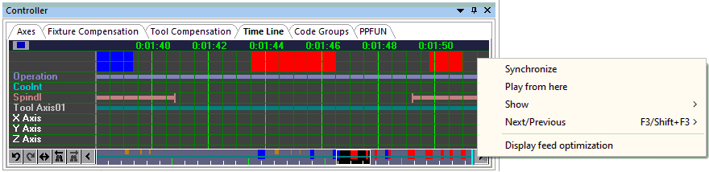

VM Controller / Time Line Tab

The VM Virtual Controller includes a Time Line feature that can be used to review and replay the simulation at any point. The VM controller can be activated from the View toolbar by selecting the button shown circled in the toolbar above. Select the button a second time to either hide the controller window or to restore a controller window that has been minimized. This window can also be controlled by selecting Simulation»Controller from the menu bar. Once the VM Controller window is active, select the Time Line tab to view a time graph of the process.
The time-scale listed horizontally at the top of the window represents the run time of the process. The pale blue vertical bar shows the moment in time that the Simulation window is currently showing. The light gray vertical line marks the end of the simulation. When the simulation is paused, you can use the up and down arrow keys or the mouse wheel to adjust the time-scale to see more or less detail. You can also zoom in to see more detail by holding the shift key down and selecting the range of interest with the left mouse button. The Simulation»Camera»Fit (Ctrl Space) function will fit the entire process within the Time Line window. Use the left and right arrow keys, Ctrl Home and Ctrl End keys, or the horizontal scroll bar to move the time-scale left and right. The Simulation»Camera»Center (Ctrl Shift Space) function will center the time-scale at the current selected time. Changes to the time-scale can be undone and redone using the Ctrl Z and Ctrl Y keys.
When the simulation is paused, you can click with the left mouse button anywhere within the Time Line to see, in the Simulation window, the state of the simulation at that moment in time. Hold the left mouse button down and drag the mouse left and right to replay the simulation forwards and backwards in time. Click with the right mouse button anywhere within the window to see a pop-up context menu. The “Synchronize” choice will synchronize the selected moment in the Time Line display with the Simulation window and any of the other tracing windows. Double-clicking in the Time Line display synchronizes at that point. The “Play from here” choice will replay the simulation from the selected point, using the continuous animation control setting.
Tooltip information describes the collision, overtravel, tool, etcetera, event of interest under the cursor. Tooltips identify the start and ending time of the event as well as other pertinent information. For example, Spindle tooltips indicate the spindle speed and direction of rotation.
The right-mouse pop-up context menu "Show"" choice can be used to select the type of information to be shown in the Time Line window, in the form of horizontal colored bars:
Channel data: provided channel creation, deletion, activation, deactivation, starvation, synchronization points, idle and wait time.
Collisions: When MRS (material removal simulation) is active, all collisions involving the in-process stock (e.g., tool rapids into stock) are identified by horizontal amber bars at the top edge of the window; the left edge of the amber bar marks the start of the motion where a collision occurs and the corresponding right edge marks the start of the next motion where the in-process stock is again collision free. Probe touch events are indicated by yellow markers. All other non in-process stock related collisions are identified by a red bar; the left edge of the red bar marks the moment in time where a collision occurs and the corresponding right edge marks the point where the simulation is again collision free.
Operation names: A solid horizontal bar indicates a named operation and vertical markers indicate operation boundaries, provided that OPNAME commands are coded.
Coolant events: A solid horizontal blue bar indicates when any type of coolant is active. Vertical markers indicate a change in coolant state.
Spindle events: A solid horizontal yellow bar indicates when the spindle is rotating. Vertical markers indicate a change in spindle state.
Tool usage: A solid horizontal bar indicates when a tool is loaded. The color of the bar matches the “cut color” of the tool. Vertical markers indicate a tool change.
Head usage: A solid orange horizontal bar indicates when a head is loaded. Vertical markers indicate a head change.
Axes overtravel: Motion axes overtravel conditions are individually identified by horizontal light purple bars drawn level with the axis on which an overtravel occurs; the left edge of the light purple bar marks the moment in time where an overtravel occurs and the corresponding right edge marks the point where the axis is once again within travel.
Channel extra data: Provide channel data for channel that are created by the user for other purpose such as tool changer mechanism or UHF devices.
The right mouse pop-up context menu "Next/Previous" choice can be used to search forwards and backwards in time to the next collision, probe touch, tool change, head change or overtravel event. The F3 and Shift F3 keys cause the Time Line to advance and synchronize to the next or previous event, or optionally to the end or beginning of the process if there are no other events of the type being searched.
When running GENER, the right mouse pop-up context menu "Display feed optimization" choice toggles between a normal view as described above and a view showing the results of Smart-FEED optimizations. When in the feed optimization view, the right mouse pop-up context menu "Show" choice can be used to select the type of information to be shown in the Time Line window, in the form of graphs:
Volume: The volume of material removed.
MRR and Opt MRR: The material removal rate before and after optimization.
Feed and Opt Feed: The tool velocity before and after optimization.
The Simulation»Options dialog Time Line tab provides the following display options: the ability to animate (i.e., smooth) transitions when moving from one moment in time to another; coloring options; F3/Shift_F3 search option; tooltip enable/disable option; and an optional upper limit on RAM consumed by Time Line (if memory limitations become an issue).
The Time Line window horizontal scroll bar shows a miniature of the entire process, with the portion currently visible in the Time Line view highlighted. We call this the “Time Line Miniature” or TLM for short. The TLM box can be dragged and manipulated in the same way as any horizontal scrollbar thumb control. In addition, holding the SHIFT key before left clicking and then dragging in the TLM (i.e., selecting a region in the horizontal bar) will set the main Time Line view to the selected time range.
The TLM shows key information from the main Time Line whether selected for display or not. This includes object collisions, MRS collisions, over travels and tool changes.
The TLM also features an easy access toolbar at the bottom-left, providing quick access to the following features of the Time Line:
Undo/Redo undo or reapply Time Line zoom and pan changes
Fit to zoom out the Time Line to view the entire process
Find previous/next to search for the next occurrence of selected search target